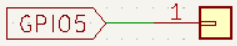
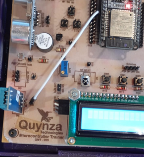

Objetivo. Aprender a utilizar el sensor de temperatura y humedad DHT11. Obtener mediciones continuas de temperatura y humedad relativa.
Procedimiento.
-
Conectar el sensor DHT11 al ESP32.
- DATA al pin digital (entrada) GPIO5


- Abrir Thonny y crear un nuevo archivo .py.
- Importar la librería dht para inicializar el sensor.
- Configurar el pin de datos como entrada digital.
-
Implementar un ciclo infinito que lea temperatura y humedad y los muestre en consola.
import dht import machine import time # Inicia el sensor DHT11 sensor = dht.DHT11(machine.Pin(5)) # Ciclo para medir continuamente la temperatura y la humedad while True: result = sensor.measure() temp = sensor.temperature() hume = sensor.humidity() print("Temperature: ", temp) print("Humidity: ", hume) time.sleep(1)
Actividades sugeridas.
- Tocar el sensor con un dedo y observar los cambios en humedad y temperatura.
- Modificar el código para mostrar las mediciones en una pantalla LCD1602.
- Cambiar el intervalo de medición ajustando time.sleep(1).
- Colocar el sensor en diferentes ambientes (interior, exterior) y comparar resultados.
- Guardar el programa en el microcontrolador y ejecutarlo sin conexión al PC.